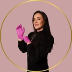

Limpeza de pele
Higienização profunda com extração e aparelhagem própria, para uma pele visivelmente mais limpa e equilibrada.
Facial, corporal, cílios e sobrancelhas em um espaço pensado para acolher, com formação em Biomedicina Estética Avançada por trás de cada procedimento. Nota 5,0 no Google, com 91 avaliações reais.

"Ambiente aconchegante e acolhedor, equipamentos e tecnologia avançados."
Graduada em Estética e Cosmética e com pós-graduação em Biomedicina Estética Avançada, Cris construiu um espaço onde cada procedimento começa com uma escuta real: entender a pele, o corpo e a expectativa de quem chega antes de propor qualquer tratamento.
O resultado aparece nas avaliações: nota 5,0 no Google, com clientes citando repetidamente um ambiente "aconchegante e acolhedor" e equipamentos "de tecnologia avançada". Uma empresa liderada por mulher, que também acolhe abertamente a comunidade LGBTQ+.
Cinco frentes de trabalho, todas com a mesma atenção ao detalhe e a mesma formação técnica avançada por trás.
Higienização profunda com extração e aparelhagem própria, para uma pele visivelmente mais limpa e equilibrada.
Alongamento e design de cílios com acabamento natural. O procedimento mais citado nas avaliações da clínica.
Design personalizado para o formato do rosto, com acabamento que dura no dia a dia.
Procedimentos para suavizar marcas de expressão e realçar os contornos naturais do rosto, com técnica de Biomedicina Estética.
Tratamentos para estrias e contorno corporal, com plano ajustado à pele e ao objetivo de cada cliente.
Cursos com a mesma bagagem técnica da Cris, para quem também quer se especializar na área.
Sozinho, aparece em 14 das 91 avaliações no Google, mais do que qualquer outro procedimento.
Pós-graduação específica em Biomedicina Estética Avançada aplicada em todo procedimento facial.
Seis pontos que aparecem com frequência nas 91 avaliações reais deixadas no Google.
Graduação em Estética e Cosmética somada a uma pós-graduação específica em Biomedicina Estética Avançada.
Citado em 9 das 91 avaliações: um espaço limpo, organizado e pensado para deixar a cliente à vontade.
A própria Cris responde às avaliações e acompanha o pós-procedimento, cliente por cliente.
Empresa liderada por mulher, que acolhe abertamente a comunidade LGBTQ+.
Equipamentos citados nas avaliações como diferencial frente a outras clínicas da região.
No bairro Exposição, em Caxias do Sul, de fácil acesso para quem vem do centro ou da região.
Nota 5,0 em 91 avaliações. Uma pequena amostra, na íntegra.
"Tive uma experiência maravilhosa na clínica! Desde o momento em que cheguei, fui muito bem recebida. O ambiente é limpo, organizado e transmite muita tranquilidade."
"Ótima experiência! Super recomendo. Lugar aconchegante e boas energias, ótima localização, excelente atendimento, e a Cris é maravilhosa, super atenciosa e dedicada."
"Ótimo atendimento, ambiente confortável, profissional excelente, excelente preço. Super recomendo!"
"Profissional exemplar, espaço top, serviço nota 1000!!"
"Já perdi as contas de quando iniciei, mas não troco por nada!"
Atendimento com hora marcada, agendado direto pelo WhatsApp.
91 avaliações no Google
As dúvidas mais comuns de quem está pensando em fazer um procedimento pela primeira vez.
Envie uma mensagem pelo WhatsApp contando o que você procura, facial, corporal, cílios ou sobrancelhas, e a Cris responde para combinar o melhor horário.
Rua Pedro Tomasi, 937 - Sl 201, Exposição, Caxias do Sul - RS, 95084-320